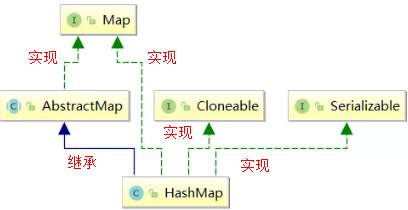
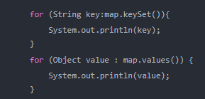
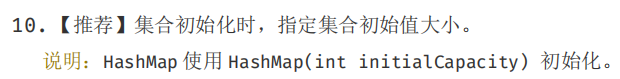
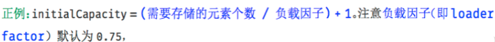

HashMap
1.HashMap集合简介
HashMap基于哈希表的Map接口实现，是以key-value存储形式存在，即主要用来存放键值对。HashMap 的实现不是同步的，这意味着它不是线程安全的。它的key、value都可以为null。此外，HashMap中的映射不是有序的。
JDK1.8 之前 HashMap 由 数组+链表 组成的，数组是 HashMap 的主体，链表则是主要为了解决哈希冲突(两个对象调用的hashCode方法计算的哈希码值一致导致计算的数组索引值相同)而存在的（“拉链法”解决冲突）.JDK1.8 以后在解决哈希冲突时有了较大的变化，当链表长度大于阈值（或者红黑树的边界值，默认为 8）并且当前数组的长度大于64时，此时此索引位置上的所有数据改为使用红黑树存储。
补充：将链表转换成红黑树前会判断，即使阈值大于8，但是数组长度小于64，此时并不会将链表变为红黑树。而是选择进行数组扩容。
这样做的目的是因为数组比较小，尽量避开红黑树结构，这种情况下变为红黑树结构，反而会降低效率，因为红黑树需要进行左旋，右旋，变色这些操作来保持平衡 。同时数组长度小于64时，搜索时间相对要快些。所以综上所述为了提高性能和减少搜索时间，底层在阈值大于8并且数组长度大于64时，链表才转换为红黑树。具体可以参考 treeifyBin方法。
当然虽然增了红黑树作为底层数据结构，结构变得复杂了，但是阈值大于8并且数组长度大于64时，链表转换为红黑树时，效率也变的更高效。
小结：
特点：
1.存取无序的
2.键和值位置都可以是null，但是键位置只能存在一个null
3.键位置是唯一的，底层的数据结构控制键的
4.jdk1.8前数据结构是：链表 + 数组 jdk1.8之后是 ： 链表 + 数组 + 红黑树
5.阈值(边界值) > 8 并且数组长度大于64，才将链表转换为红黑树，变为红黑树的目的是为了高效的查询。
2.HashMap集合底层的数据结构
2.1数据结构概念
数据结构是计算机存储、组织数据的方式。数据结构是指相互之间存在一种或多种特定关系的数据元素的集合。通常情况下，精心选择的数据结构可以带来更高的运行或者存储效率。数据结构往往同高效的检索算法和索引技术有关。
数据结构：就是存储数据的一种方式。ArrayList LinkedList
在JDK1.8 之前 HashMap 由 数组+链表 数据结构组成的。
在JDK1.8 之后 HashMap 由 数组+链表 +红黑树数据结构组成的。
2.2HashMap底层的数据结构存储数据的过程
存储过程如下所示：
使用的代码：
<!--code0-->说明：
初始化一个HashMap，向map中存放元素时，代码实现是创建了一个默认长度为16的一维数组，（jdk1.8之前）。jdk1.8时，并没有在new HashMap就开辟空间，而是在首次调用put方法时才创建Node [] table 数组。 假设添加一个key1，value 1 ，首先调用key1的hashCode()方法，计算出key1的哈希吗，再经过一系列的算法计算后，得到在Node数组中存放的位置，也就是数组下标。如果此下标对应的数组是空的，则添加进去。如果不为空说明出现了hash碰撞，此时比较数组中已经存在的元素和当前添加的元素equals是否相等，相等则覆盖添加。不相等则划出一个节点为链表存储。
1.面试题：HashMap中hash函数是怎么实现的？还有哪些hash函数的实现方式？
<!--code1-->2.面试题：当两个对象的hashCode相等时会怎么样？
<!--code2-->3.面试题：何时发生哈希碰撞和什么是哈希碰撞,如何解决哈希碰撞？
<!--code3-->4.面试题：如果两个键的hashcode相同，如何存储键值对？
<!--code4-->5.在不断的添加数据的过程中，会涉及到扩容问题，当超出临界值(且要存放的位置非空)时，扩容。默认的扩容方式：扩容为原来容量的2倍，并将原有的数据复制过来。
6.通过上述描述，当位于一个链表中的元素较多，即hash值相等但是内容不相等的元素较多时，通过key值依次查找的效率较低。而JDK1.8中，哈希表存储采用数组+链表+红黑树实现，当链表长度(阀值)超过 8 时且当前数组的长度 > 64时，将链表转换为红黑树，这样大大减少了查找时间。jdk8在哈希表中引入红黑树的原因只是为了查找效率更高。
简单的来说，哈希表是由数组+链表+红黑树（JDK1.8增加了红黑树部分）实现的。如下图所示。

但是这样的话问题来了，传统hashMap的缺点，1.8为什么引入红黑树？这样结构的话不是更麻烦了吗，为何阈值大于8换成红黑树？
JDK 1.8 以前 HashMap 的实现是 数组+链表，即使哈希函数取得再好，也很难达到元素百分百均匀分布。当 HashMap 中有大量的元素都存放到同一个桶中时，这个桶下有一条长长的链表，这个时候 HashMap 就相当于一个单链表，假如单链表有 n 个元素，遍历的时间复杂度就是 O(n)，完全失去了它的优势。针对这种情况，JDK 1.8 中引入了 红黑树（查找时间复杂度为 O(logn)）来优化这个问题。 当链表长度很小的时候，即使遍历，速度也非常快，但是当链表长度不断变长，肯定会对查询性能有一定的影响，所以才需要转成树。
至于为什么阈值是8，我想，去源码中找寻答案应该是最可靠的途径。 下面我们在分析源码的时候会介绍。
7.总结：
上述我们大概阐述了HashMap底层存储数据的方式。为了方便大家更好的理解，我们结合一个存储流程图来进一步说明一下：(jdk8存储过程)

说明：
1.size表示 HashMap中K-V的实时数量 ， 注意这个不等于数组的长度 。
2.threshold( 临界值) =capacity(容量) * loadFactor( 加载因子 )。这个值是当前已占用数组长度的最大值。size超过这个临界值就重新resize(扩容)，扩容后的 HashMap 容量是之前容量的两倍 。
3.HashMap继承关系
HashMap继承关系如下图所示：

说明：
- Cloneable 空接口，表示可以克隆。 创建并返回HashMap对象的一个副本。
- Serializable 序列化接口。属于标记性接口。HashMap对象可以被序列化和反序列化。
- AbstractMap 父类提供了Map实现接口。以最大限度地减少实现此接口所需的工作。
补充：通过上述继承关系我们发现一个很奇怪的现象， 就是HashMap已经继承了AbstractMap而AbstractMap类实现了Map接口，那为什么HashMap还要在实现Map接口呢？同样在ArrayList中LinkedList中都是这种结构。
<!--code5-->4.HashMap集合类的成员
4.1成员变量
1.序列化版本号
<!--code6-->2.集合的初始化容量( 必须是二的n次幂 )
<!--code7-->问题： 为什么必须是2的n次幂？如果输入值不是2的幂比如10会怎么样？
HashMap构造方法还可以指定集合的初始化容量大小：
<!--code8-->根据上述讲解我们已经知道，当向HashMap中添加一个元素的时候，需要根据key的hash值，去确定其在数组中的具体位置。 HashMap为了存取高效，要尽量较少碰撞，就是要尽量把数据分配均匀，每个链表长度大致相同，这个实现就在把数据存到哪个链表中的算法。
这个算法实际就是取模，hash%length，计算机中直接求余效率不如位移运算(这点上述已经讲解)。所以源码中做了优化,使用 hash&(length-1)，而实际上hash%length等于hash&(length-1)的前提是length是2的n次幂。
为什么这样能均匀分布减少碰撞呢？2的n次方实际就是1后面n个0，2的n次方-1 实际就是n个1；
举例：
说明：按位与运算：相同的二进制数位上，都是1的时候，结果为1，否则为零。
<!--code9--><!--code10-->注意： 当然如果不考虑效率直接求余即可（就不需要要求长度必须是2的n次方了）
小结：
<!--code11--><!--code12--><!--code13--><!--code14-->说明：
由此可以看到，当在实例化HashMap实例时，如果给定了initialCapacity(假设是10)，由于HashMap的capacity必须都是2的幂，因此这个方法用于找到大于等于initialCapacity(假设是10)的最小的2的幂（initialCapacity如果就是2的幂，则返回的还是这个数）。 下面分析这个算法： 1)、首先，为什么要对cap做减1操作。int n = cap - 1; 这是为了防止，cap已经是2的幂。如果cap已经是2的幂， 又没有执行这个减1操作，则执行完后面的几条无符号右移操作之后，返回的capacity将是这个cap的2倍。如果不懂，要看完后面的几个无符号右移之后再回来看看。 下面看看这几个无符号右移操作： 2）、如果n这时为0了（经过了cap-1之后），则经过后面的几次无符号右移依然是0，最后返回的capacity是 1（最后有个n+1的操作）。 这里只讨论n不等于0的情况。
3）、注意：|（按位或运算）：运算规则：相同的二进制数位上，都是0的时候，结果为0，否则为1。
<!--code15-->由于n不等于0，则n的二进制表示中总会有一bit为1，这时考虑最高位的1。通过无符号右移1位，则将最高位的1右移了1位，再做或操作，使得n的二进制表示中与最高位的1紧邻的右边一位也为1，如：
<!--code16-->第二次右移 ：
<!--code17-->注意，这个n已经经过了n |= n >>> 1; 操作。假设此时n为00000000 00000000 00000000 00001101 ，则n无符号右移两位，会将最高位两个连续的1右移两位，然后再与原来的n做或操作，这样n的二进制表示的高位中会有4个连续的1。如：
第三次右移 :
<!--code19-->这次把已经有的高位中的连续的4个1，右移4位，再做或操作，这样n的二进制表示的高位中正常会有8个连续的1。如00001111 1111xxxxxx 。 以此类推 注意，容量最大也就是32bit的正数，因此最后n |= n >>> 16; ，最多也就32个1（但是这已经是负数了。在执行tableSizeFor之前，对initialCapacity做了判断，如果大于MAXIMUM_CAPACITY(2 ^ 30)，则取MAXIMUM_CAPACITY。如果等于MAXIMUM_CAPACITY(2 ^ 30)，会执行移位操作。所以这里面的移位操作之后，最大30个1，不会大于等于MAXIMUM_CAPACITY。30个1，加1之后得2 ^ 30） 。 请看下面的一个完整例子：

注意，得到的这个capacity却被赋值给了threshold。
<!--code20-->3.默认的负载因子，默认值是0.75
<!--code21-->4.集合最大容量
<!--code22-->5.当链表的值超过8则会转红黑树(1.8新增)
<!--code23-->问题：为什么Map桶中节点个数超过8才转为红黑树？
8这个阈值定义在HashMap中，针对这个成员变量，在源码的注释中只说明了8是bin（bin就是bucket(桶)）从链表转成树的阈值，但是并没有说明为什么是8：
在HashMap中有一段注释说明： 我们继续往下看 :
<!--code24-->TreeNodes占用空间是普通Nodes的两倍，所以只有当bin包含足够多的节点时才会转成TreeNodes，而是否足够多就是由TREEIFY_THRESHOLD的值决定的。当bin中节点数变少时，又会转成普通的bin。并且我们查看源码的时候发现，链表长度达到8就转成红黑树，当长度降到6就转成普通bin。
这样就解释了为什么不是一开始就将其转换为TreeNodes，而是需要一定节点数才转为TreeNodes，说白了就是权衡，空间和时间的权衡。
这段内容还说到：当hashCode离散性很好的时候，树型bin用到的概率非常小，因为数据均匀分布在每个bin中，几乎不会有bin中链表长度会达到阈值。但是在随机hashCode下，离散性可能会变差，然而JDK又不能阻止用户实现这种不好的hash算法，因此就可能导致不均匀的数据分布。不过理想情况下随机hashCode算法下所有bin中节点的分布频率会遵循泊松分布，我们可以看到，一个bin中链表长度达到8个元素的概率为0.00000006，几乎是不可能事件。所以，之所以选择8，不是随便决定的，而是根据概率统计决定的。由此可见，发展将近30年的Java每一项改动和优化都是非常严谨和科学的。
也就是说：选择8因为符合泊松分布，超过8的时候，概率已经非常小了，所以我们选择8这个数字。
补充：
1）.
<!--code25-->

2）.以下是我在研究这个问题时，在一些资料上面翻看的解释：供大家参考：
<!--code27-->6.当链表的值小于6则会从红黑树转回链表
<!--code28-->7.当Map里面的数量超过这个值时，表中的桶才能进行树形化 ，否则桶内元素太多时会扩容，而不是树形化 为了避免进行扩容、树形化选择的冲突，这个值不能小于 4 * TREEIFY_THRESHOLD (8)
<!--code29-->8、table用来初始化(必须是二的n次幂)(重点)
<!--code30-->table在JDK1.8中我们了解到HashMap是由数组加链表加红黑树来组成的结构其中table就是HashMap中的数组，jdk8之前数组类型是Entry<K,V>类型。从jdk1.8之后是Node<K,V>类型。只是换了个名字，都实现了一样的接口：Map.Entry<K,V>。负责存储键值对数据的。
9、用来存放缓存
<!--code31-->10、 HashMap中存放元素的个数(重点)
<!--code32-->size为HashMap中K-V的实时数量，不是数组table的长度。
11、 用来记录HashMap的修改次数
<!--code33-->12、 用来调整大小下一个容量的值计算方式为(容量*负载因子)
<!--code34-->13、 哈希表的加载因子(重点)
<!--code35-->说明：
1.loadFactor加载因子，是用来衡量 HashMap 满的程度，表示HashMap的疏密程度，影响hash操作到同一个数组位置的概率，计算HashMap的实时加载因子的方法为：size/capacity，而不是占用桶的数量去除以capacity。capacity 是桶的数量，也就是 table 的长度length。
loadFactor太大导致查找元素效率低，太小导致数组的利用率低，存放的数据会很分散。loadFactor的默认值为0.75f是官方给出的一个比较好的临界值。
当HashMap里面容纳的元素已经达到HashMap数组长度的75%时，表示HashMap太挤了，需要扩容，而扩容这个过程涉及到 rehash、复制数据等操作，非常消耗性能。，所以开发中尽量减少扩容的次数，可以通过创建HashMap集合对象时指定初始容量来尽量避免。
同时在HashMap的构造器中可以定制loadFactor。
<!--code36-->2.为什么加载因子设置为0.75,初始化临界值是12？
loadFactor越趋近于1，那么 数组中存放的数据(entry)也就越多，也就越密，也就是会让链表的长度增加，loadFactor越小，也就是趋近于0，数组中存放的数据(entry)也就越少，也就越稀疏。

如果希望链表尽可能少些。要提前扩容，有的数组空间有可能一直没有存储数据。加载因子尽可能小一些。
举例：
<!--code37-->所以既兼顾数组利用率又考虑链表不要太多，经过大量测试0.75是最佳方案。
- threshold计算公式：capacity(数组长度默认16) * loadFactor(负载因子默认0.75)。这个值是当前已占用数组长度的最大值。当Size>=threshold的时候，那么就要考虑对数组的resize(扩容)，也就是说，这个的意思就是 衡量数组是否需要扩增的一个标准。 扩容后的 HashMap 容量是之前容量的两倍.
4.2构造方法
HashMap 中重要的构造方法，它们分别如下：
1、构造一个空的 HashMap ，默认初始容量（16）和默认负载因子（0.75）。
2、 构造一个具有指定的初始容量和默认负载因子（0.75） HashMap。
3、 构造一个具有指定的初始容量和负载因子的 HashMap。我们来分析一下。
说明：
对于 this.threshold = tableSizeFor(initialCapacity); 疑问解答：
tableSizeFor(initialCapacity) 判断指定的初始化容量是否是2的n次幂，如果不是那么会变为比指定初始化容量大的最小的2的n次幂。这点上述已经讲解过。 但是注意，在tableSizeFor方法体内部将计算后的数据返回给调用这里了，并且直接赋值给threshold边界值了。有些人会觉得这里是一个bug,应该这样书写：
this.threshold = tableSizeFor(initialCapacity) * this.loadFactor; 这样才符合threshold的意思（当HashMap的size到达threshold这个阈值时会扩容）。 但是，请注意，在jdk8以后的构造方法中，并没有对table这个成员变量进行初始化，table的初始化被推迟到了put方法中，在put方法中会对threshold重新计算，put方法的具体实现我们下面会进行讲解
4、包含另一个“Map”的构造函数
<!--code41-->最后调用了putMapEntries，来看一下方法实现：
<!--code42-->注意：
float ft = ((float)s / loadFactor) + 1.0F;这一行代码中为什么要加1.0F ？
s/loadFactor的结果是小数，加1.0F与(int)ft相当于是对小数做一个向上取整以尽可能的保证更大容量，更大的容量能够减少resize的调用次数。所以 + 1.0F是为了获取更大的容量。
例如：原来集合的元素个数是6个，那么6/0.75是8，是2的n次幂，那么新的数组大小就是8了。然后原来数组的数据就会存储到长度是8的新的数组中了，这样会导致在存储元素的时候，容量不够，还得继续扩容，那么性能降低了，而如果+1呢，数组长度直接变为16了，这样可以减少数组的扩容。
4.3成员方法
4.3.1增加方法
put方法是比较复杂的，实现步骤大致如下：
1）先通过hash值计算出key映射到哪个桶；
2）如果桶上没有碰撞冲突，则直接插入；
3）如果出现碰撞冲突了，则需要处理冲突：
<!--code43--><!--code44-->4）如果桶中存在重复的键，则为该键替换新值value；
5）如果size大于阈值threshold，则进行扩容；
具体的方法如下：
<!--code45-->说明：
<!--code46-->2）我们可以看到在putVal()方法中key在这里执行了一下hash()方法,来看一下Hash方法是如何实现的。
<!--code47-->从上面可以得知HashMap是支持Key为空的，而HashTable是直接用Key来获取HashCode所以key为空会抛异常。
{其实上面就已经解释了为什么HashMap的长度为什么要是2的幂因为HashMap 使用的方法很巧妙，它通过 hash & (table.length -1)来得到该对象的保存位，前面说过 HashMap 底层数组的长度总是2的n次方，这是HashMap在速度上的优化。当 length 总是2的n次方时，hash & (length-1)运算等价于对 length 取模，也就是hash%length，但是&比%具有更高的效率。比如 n % 32 = n & (32 -1)。}
解读上述hash方法：
我们先研究下key的哈希值是如何计算出来的。key的哈希值是通过上述方法计算出来的。
这个哈希方法首先计算出key的hashCode赋值给h,然后与h无符号右移16位后的二进制进行按位异或得到最后的 hash值。计算过程如下所示：
<!--code48-->在putVal函数中使用到了上述hash函数计算的哈希值：
<!--code49-->计算过程如下所示：
<!--code50--><!--code51--><!--code52--><!--code53--><!--code54-->

简单来说就是：
-
高16 bit 不变，低16 bit 和高16 bit 做了一个异或（得到的 hashcode 转化为32位二进制，前16位和后16位低16 bit和高16 bit做了一个异或）
问题：为什么要这样操作呢？
如果当n即数组长度很小，假设是16的话，那么n-1即为 ---》1111 ，这样的值和hashCode()直接做按位与操作，实际上只使用了哈希值的后4位。如果当哈希值的高位变化很大，低位变化很小，这样就很容易造成哈希冲突了，所以这里把高低位都利用起来，从而解决了这个问题。
<!--code55--> -
(n-1) & hash = -> 得到下标 (n-1) n表示数组长度16，n-1就是15
-
取余数本质是不断做除法，把剩余的数减去，运算效率要比位运算低。
现在看putVal()方法，看看它到底做了什么。
主要参数：
- hash key的hash值
- key 原始Key
- value 要存放的值
- onlyIfAbsent 如果true代表不更改现有的值
- evict 如果为false表示table为创建状态
putVal()方法源代码如下所示：
<!--code56-->4.3.2将链表转换为红黑树的treeifyBin方法
节点添加完成之后判断此时节点个数是否大于TREEIFY_THRESHOLD临界值8，如果大于则将链表转换为红黑树，转换红黑树的方法 treeifyBin，整体代码如下：
<!--code57-->treeifyBin方法如下所示：
<!--code58-->小结：上述操作一共做了如下几件事：
1.根据哈希表中元素个数确定是扩容还是树形化
2.如果是树形化遍历桶中的元素，创建相同个数的树形节点，复制内容，建立起联系
3.然后让桶中的第一个元素指向新创建的树根节点，替换桶的链表内容为树形化内容
4.3.3扩容方法_resize
4.3.3.1扩容机制
想要了解HashMap的扩容机制你要有这两个问题
- 1.什么时候才需要扩容
- 2.HashMap的扩容是什么
1.什么时候才需要扩容
当HashMap中的元素个数超过数组大小(数组长度)*loadFactor(负载因子)时，就会进行数组扩容，loadFactor的默认值(DEFAULT_LOAD_FACTOR)是0.75,这是一个折中的取值。也就是说，默认情况下，数组大小为16，那么当HashMap中的元素个数超过16×0.75=12(这个值就是阈值或者边界值threshold值)的时候，就把数组的大小扩展为2×16=32，即扩大一倍，然后重新计算每个元素在数组中的位置，而这是一个非常耗性能的操作，所以如果我们已经预知HashMap中元素的个数，那么预知元素的个数能够有效的提高HashMap的性能。
补充：
当HashMap中的其中一个链表的对象个数如果达到了8个，此时如果数组长度没有达到64，那么HashMap会先扩容解决，如果已经达到了64，那么这个链表会变成红黑树，节点类型由Node变成TreeNode类型。当然，如果映射关系被移除后，下次执行resize方法时判断树的节点个数低于6，也会再把树转换为链表。
2.HashMap的扩容是什么
进行扩容，会伴随着一次重新hash分配，并且会遍历hash表中所有的元素，是非常耗时的。在编写程序中，要尽量避免resize。
HashMap在进行扩容时，使用的rehash方式非常巧妙，因为每次扩容都是翻倍，与原来计算的 (n-1)&hash的结果相比，只是多了一个bit位，所以节点要么就在原来的位置，要么就被分配到"原位置+旧容量"这个位置。
怎么理解呢？例如我们从16扩展为32时，具体的变化如下所示：

因此元素在重新计算hash之后，因为n变为2倍，那么n-1的标记范围在高位多1bit(红色)，因此新的index就会发生这样的变化：

说明：5是假设计算出来的原来的索引。这样就验证了上述所描述的：扩容之后所以节点要么就在原来的位置，要么就被分配到"原位置+旧容量"这个位置。
因此，我们在扩充HashMap的时候，不需要重新计算hash，只需要看看原来的hash值新增的那个bit是1还是0就可以了，是0的话索引没变，是1的话索引变成“原索引+oldCap(原位置+旧容量)”。可以看看下图为16扩充为32的resize示意图：

正是因为这样巧妙的rehash方式，既省去了重新计算hash值的时间，而且同时，由于新增的1bit是0还是1可以认为是随机的，在resize的过程中保证了rehash之后每个桶上的节点数一定小于等于原来桶上的节点数，保证了rehash之后不会出现更严重的hash冲突，均匀的把之前的冲突的节点分散到新的桶中了。
4.3.3.2源码resize方法的解读
下面是代码的具体实现：
<!--code59-->4.3.4 删除方法(remove)
理解了put方法之后，remove方法已经没什么难度了，所以重复的内容就不再做详细介绍了。
删除的话就是首先先找到元素的位置，如果是链表就遍历链表找到元素之后删除。如果是用红黑树就遍历树然后找到之后做删除，树小于6的时候要转链表。
删除remove方法：
<!--code60-->removeNode方法：
<!--code61-->4.3.5查找元素方法(get)
查找方法，通过元素的Key找到Value。
代码如下：
<!--code62-->get方法主要调用的是getNode方法，代码如下：
<!--code63-->小结：
1.get方法实现的步骤：
<!--code64--><!--code65--><!--code66--><!--code67--><!--code68-->2.上述红黑树节点调用的是getTreeNode方法通过树形节点的find方法进行查找：
<!--code69-->3.查找红黑树，由于之前添加时已经保证这个树是有序的了，因此查找时基本就是折半查找，效率更高。
4.这里和插入时一样，如果对比节点的哈希值和要查找的哈希值相等，就会判断key是否相等，相等就直接返回。不相等就从子树中递归查找。
<!--code70--><!--code71-->4.3.6遍历HashMap集合几种方式
1、分别遍历Key和Values

2、使用Iterator迭代器迭代

3、通过get方式（不建议使用）

说明：根据阿里开发手册，不建议使用这种方式，因为迭代两次。keySet获取Iterator一次，还有通过get又迭代一次。降低性能。
4.jdk8以后使用Map接口中的默认方法：
<!--code72-->遍历代码：
<!--code73-->5.如何设计多个非重复的键值对要存储HashMap的初始化？
5.1HashMap的初始化问题描述
<!--code74--><!--code75-->《阿里巴巴Java开发手册》中建议我们设置HashMap的初始化容量。

那么，为什么要这么建议？你有想过没有。
当然，以上建议也是有理论支撑的。我们上面介绍过，HashMap的扩容机制，就是当达到扩容条件时会进行扩容。HashMap的扩容条件就是当HashMap中的元素个数（size）超过临界值（threshold）时就会自动扩容。在HashMap中，threshold = loadFactor * capacity。
所以，如果我们没有设置初始容量大小，随着元素的不断增加，HashMap会有可能发生多次扩容，而HashMap中的扩容机制决定了每次扩容都需要重建hash表，是非常影响性能的。
但是设置初始化容量，设置的数值不同也会影响性能，那么当我们已知HashMap中即将存放的KV个数的时候，容量设置成多少为好呢？
5.2HashMap中容量的初始化
当我们使用HashMap(int initialCapacity)来初始化容量的时候，jdk会默认帮我们计算一个相对合理的值当做初始容量。那么，是不是我们只需要把已知的HashMap中即将存放的元素个数直接传给initialCapacity就可以了呢？
关于这个值的设置，在《阿里巴巴Java开发手册》有以下建议：

也就是说，如果我们设置的默认值是7，经过Jdk处理之后，会被设置成8，但是，这个HashMap在元素个数达到 8*0.75 = 6的时候就会进行一次扩容，这明显是我们不希望见到的。我们应该尽量减少扩容。原因也已经分析过。
如果我们通过initialCapacity/ 0.75F + 1.0F计算，7/0.75 + 1 = 10 ,10经过Jdk处理之后，会被设置成16，这就大大的减少了扩容的几率。
当HashMap内部维护的哈希表的容量达到75%时（默认情况下），会触发rehash，而rehash的过程是比较耗费时间的。所以初始化容量要设置成initialCapacity/0.75 + 1的话，可以有效的减少冲突也可以减小误差。
所以，我可以认为，当我们明确知道HashMap中元素的个数的时候，把默认容量设置成initialCapacity/ 0.75F + 1.0F是一个在性能上相对好的选择，但是，同时也会牺牲些内存。
我们想要在代码中创建一个HashMap的时候，如果我们已知这个Map中即将存放的元素个数，给HashMap设置初始容量可以在一定程度上提升效率。
但是，JDK并不会直接拿用户传进来的数字当做默认容量，而是会进行一番运算，最终得到一个2的幂。原因也已经分析过。
但是，为了最大程度的避免扩容带来的性能消耗，我们建议可以把默认容量的数字设置成initialCapacity/ 0.75F + 1.0F。
If you like this blog or find it useful for you, you are welcome to comment on it. You are also welcome to share this blog, so that more people can participate in it. If the images used in the blog infringe your copyright, please contact the author to delete them. Thank you !